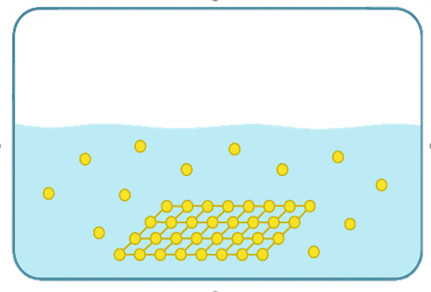
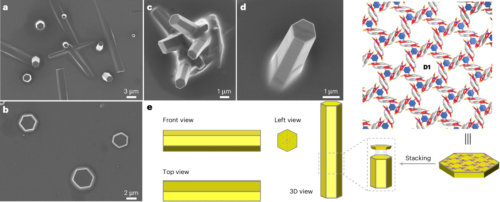
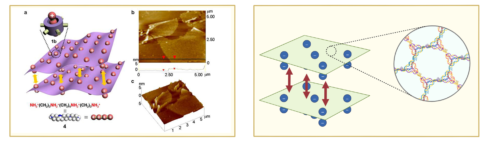
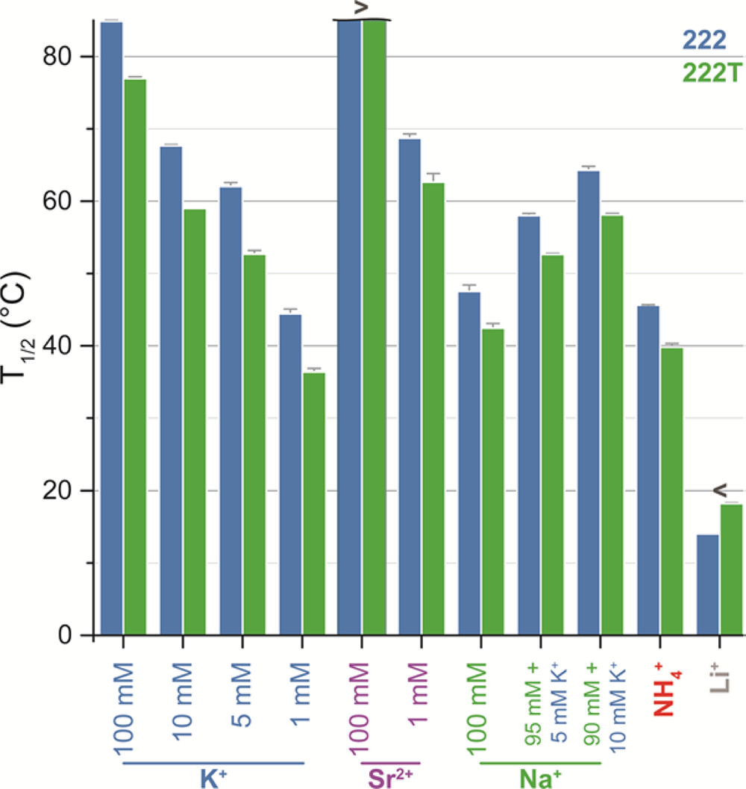
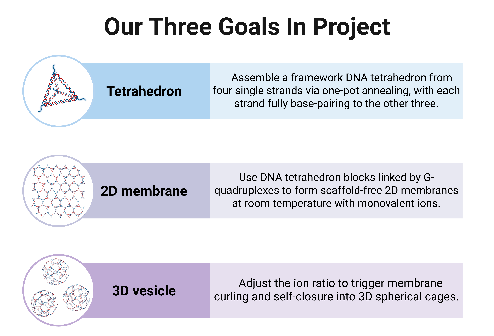

Substrate-free two-dimensional (2D) materials represent a unique class of planar molecular assemblies formed directly in solution without the need for a supporting substrate or template. Free from interfacial constraints, such assemblies retain their intrinsic in-plane order, minimize substrate-induced defects, and can be fabricated under mild, solution-phase conditions. More importantly, the absence of a rigid substrate provides spatial freedom for programmable structural evolution, enabling controlled bending, folding, and closure, and thereby offering a general strategy to transform flat 2D sheets into higher-order 3D architectures.

Despite these advantages, achieving well-controlled substrate-free 2D assembly remains a major challenge. In the absence of substrate guidance, balancing in-plane orientation while suppressing out-of-plane interactions is nontrivial. Flexible molecular backbones and weak noncovalent interactions often lead to random branching, interlayer stacking, or three-dimensional cross-linking, compromising structural uniformity and long-range order. Moreover, fine-tuning between rigidity (to maintain lattice stability) and flexibility (to allow curvature and self-correction) is difficult to achieve simultaneously.
These difficulties become even more pronounced in life-science contexts, where assembly must occur in aqueous, biocompatible environments and remain stable under physiological ionic conditions. Biomolecular assemblies are also subject to electrostatic repulsion, hydration forces, and dynamic fluctuations, further complicating control over 2D morphology. As a result, substrate-free strategies that can achieve precise structural control, environmental adaptability, and programmable curvature remain extremely limited, hindering their broader biological and biomedical applications.
In this study, we aim to design a substrate-free DNA membrane that can self-assemble into a stable and ordered 2D lattice through non-covalent interactions, while simplifying the synthesis process. Additionally, under controlled conditions, the membrane is designed to undergo programmable bending and reversible opening and closing, thereby enabling the construction of exosome-like intelligent 3D nanostructures.
However, achieving substrate-free growth of DNA 2D materials remains a major challenge. The inherent flexibility and thermal motion of DNA strands often cause deviations from the intended planar arrangement during assembly, making it difficult to form stable 2D membranes without external support [1] . Consequently, disordered or cross-linked three-dimensional structures frequently emerge, compromising the uniformity and stability required for scalable material fabrication.
Meanwhile, some researchers have proposed that synthesizing 3D vesicles by inducing the bending and closure of 2D materials may offer more advantages than direct vesicle synthesis [2] (See figure 2 for assembly steps). Building on this concept, we provide a new choice to synthesize single-layer, hollow, and stimuli-responsive 3D vesicles. However, this approach also faces significant challenges. Improper control of the bending process can lead to multilayered or heterogeneous structures rather than ideal single-layer hollow vesicles. How can we guide the membrane to curl and close under external environmental stimuli? How can we maintain structural integrity and stability during bending? And how can we strike a balance between rigidity—too high to allow bending—and flexibility—too great to maintain closure stability? These questions will be addressed in detail in the following Problem and Solution sections.

Problem 1：
In substrate-free two-dimensional assembly, rigid small organic molecules are typically chosen as monomers. Due to the presence of various aromatic rings and conjugated systems in these molecules, the arrangement of atoms within the molecule is relatively fixed, and the bond angles of each chemical bond can help restrict the growth direction of the assembly during the assembly process [3]. However, when assembling more flexible monomers such as nucleic acid molecules, the swinging caused by the thermal motion of nucleic acid chains leads to variations in the extension direction of assembly, resulting in random assembly. This may form assemblies with branched structures or three-dimensional cross-linked structures, making it difficult to achieve two-dimensional assembly [1].

Solution 1：
We can avoid the formation of random assemblies by introducing rigid constraining structures and reversible linking units. The introduction of rigid structures allows for a certain restriction on the orientation of nucleic acid chains; however, this restriction is insufficient to fully overcome the hindrance posed by the flexibility of nucleic acid chains to directional assembly. Herein, we propose a two-dimensional material assembled from DNA tetrahedra and G-quadruplexes. We utilize DNA tetrahedra as building blocks, with G-rich oligomeric chains extended from three of their vertices. Under the action of monovalent metal cations, two such oligomeric chains can form a G-quadruplex structure [5], which in turn connects two DNA tetrahedra. As framework nucleic acids, DNA tetrahedra inherently possess a certain degree of rigidity [6], which can restrict the orientation of G-quadruplexes to a certain extent and guide G-quadruplexes to connect with other DNA tetrahedra within a specific angular range. G-quadruplexes can achieve reversible assembly-disassembly processes under the regulation of ion concentration and temperature. This disassembly process allows DNA tetrahedra to adjust their conformations and spatial positions, enabling the two-dimensional material to achieve an energy-minimized and most stable arrangement, thus realizing effective two-dimensional assembly.
Advantages 1:
Combines the geometric rigidity of TDN with the reversible G4 linkage to achieve both structural stability and dynamic self-correction.
Enables fully substrate-free assembly while maintaining long-range 2D order.
Provides a programmable and reversible construction process that conventional rigid organic monomers cannot achieve.
Offers dual-level control over assembly precision and flexibility, leading to a more adaptive and fault-tolerant 2D growth system.


Problem 2:
During the two-dimensional assembly process, it is difficult to avoid stacking between layers caused by intermolecular interactions. In the preparation process, it is easy to obtain multi-molecular layered materials rather than single-molecular layered ones [1]. How to solve this problem?

Solution 2:
During the assembly process, although we restrict the connectivity between monomers to occur exclusively in the two-dimensional direction, it remains difficult to prevent spontaneous stacking between layers via intermolecular forces, which leads to the thickening of the membrane material in the three-dimensional direction. To address the issue of interlayer stacking, we need to regulate the balance between intralayer and interlayer interactions.
Existing solutions suggest that introducing charges into the molecular layer induces electrostatic repulsion between layers, which can reduce interlayer stacking and achieve single-layer two-dimensional assembly [4]. In this project, due to the phosphoribose backbones, DNA molecules naturally impart a certain negative charge to the two-dimensional assembly layers. This results in the dominant force between layers being the repulsion between phosphoribose backbones, while intralayer monomers are connected via G-quadruplexes. This interaction exists only on the two-dimensional membrane plane and provides a guarantee for the two-dimensional assembly with a single-layer thickness.
Advantages 2:
The DNA phosphate backbone provides uniform negative surface charges, generating natural interlayer electrostatic repulsion.
G4 linkers maintain controlled in-plane cohesion, ensuring single-layer precision during assembly.
The process occurs entirely under mild aqueous conditions without chemical modification or harsh reagents.
Achieves scalable, biocompatible, and layer-controlled 2D synthesis superior to covalent polymer or charge-tuned systems

Problem 3:
In the transformation of two-dimensional assemblies into curved three-dimensional vesicles, several intrinsic challenges arise. First, once a flat 2D oligomeric patch reaches a critical size, spontaneous bending may occur to minimize the system’s free energy [2]. However, controlling this bending process is extremely difficult, as it often leads to ill-defined or partially closed structures rather than uniform vesicles. Second, irreversible covalent bond formation during assembly can lock defects into the structure, preventing error correction and producing non-uniform or mechanically unstable vesicles.
Solution 3:
To overcome these challenges, we propose a new strategy: incorporating G-quadruplex (G4) linkers with ion-regulated bonding strength into the self-assembly of two-dimensional nucleic acid materials [7]. On one hand, the spatial geometry of G4 junctions introduces slight angular mismatches, endowing the flat lattice with an inherent tendency to bend. On the other hand, the enhanced bonding strength lowers the critical radius for curvature, driving the 2D membrane system to reduce free edges and thereby favor curling and closure [2]. Furthermore, by exploiting the reversibility of G4 linkages, the system undergoes prolonged cycles of assembly and disassembly during the formation of the supramolecular 2D material. This dynamic process allows the DNA tetrahedra to adjust their conformations and spatial positions, reach equilibrium, and ultimately assemble into an energy-minimized and stable configuration, giving rise to a membrane structure that grows in a relatively ordered fashion along the two-dimensional plane.
Advantages 3:
G4 junction strength can be finely tuned by ion concentration, enabling precise curvature control of the membrane.
The 2D membrane can reversibly bend and unfold under ionic stimuli without structural damage.
Provides a controllable pathway from flat 2D lattices to uniform single-layer vesicles.
Unlike irreversible covalent or mechanical confinement systems, our design allows fully reversible and programmable shape transformation driven by environmental ions.


(1) Tang, Z.-B.; Bian, L.; Miao, X.; Gao, H.; Liu, L.; Jiang, Q.; Shen, D.; Xu, L.; Sue, A. C.-H.; Zheng, X.; Liu, Z. Synthesis of a Crystalline Two-Dimensional [C2]Daisy Chain Honeycomb Network. Nat. Synth 2025, 4 (8), 922–930. https://doi.org/10.1038/s44160-025-00791-x.
(2) Kim, D.; Kim, E.; Lee, J.; Hong, S.; Sung, W.; Lim, N.; Park, C. G.; Kim, K. Direct Synthesis of Polymer Nanocapsules: Self-Assembly of Polymer Hollow Spheres through Irreversible Covalent Bond Formation. J. Am. Chem. Soc. 2010, 132 (28), 9908–9919. https://doi.org/10.1021/ja1039242.
(3) Sakamoto, J.; van Heijst, J.; Lukin, O.; Schlüter, A. D. Two‐Dimensional Polymers: Just a Dream of Synthetic Chemists? Angew Chem Int Ed 2009, 48 (6), 1030–1069. https://doi.org/10.1002/anie.200801863.
(4) Baek, K.; Yun, G.; Kim, Y.; Kim, D.; Hota, R.; Hwang, I.; Xu, D.; Ko, Y. H.; Gu, G. H.; Suh, J. H.; Park, C. G.; Sung, B. J.; Kim, K. Free-Standing, Single-Monomer-Thick Two-Dimensional Polymers through Covalent Self-Assembly in Solution. J. Am. Chem. Soc. 2013, 135 (17), 6523–6528. https://doi.org/10.1021/ja4002019.
(5) Monsen, R. C.; Trent, J. O.; Chaires, J. B. G-Quadruplex DNA: A Longer Story. Acc. Chem. Res. 2022, 55 (22), 3242–3252. https://doi.org/10.1021/acs.accounts.2c00519.
(6) Ge, Z.; Gu, H.; Li, Q.; Fan, C. Concept and Development of Framework Nucleic Acids. J. Am. Chem. Soc. 2018, 140 (51), 17808–17819. https://doi.org/10.1021/jacs.8b10529.
(7) Largy, E.; Marchand, A.; Amrane, S.; Gabelica, V.; Mergny, J.-L. Quadruplex Turncoats: Cation-Dependent Folding and Stability of Quadruplex-DNA Double Switches. J. Am. Chem. Soc. 2016, 138 (8), 2780–2792. https://doi.org/10.1021/jacs.5b13130.